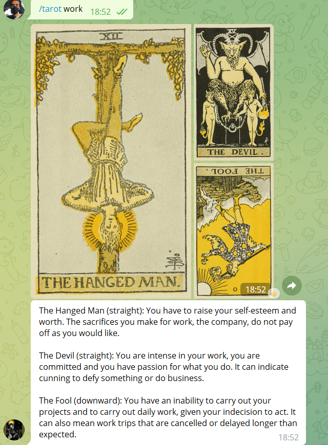

Components
Explicació
El nostre bot s'anomenarà “FortuneBot” i aquest es basa bàsicament a tirar les cartes de Tarot als nostres usuaris (en aquest cas, els arcans majors)
i mostrar-li la seva fortuna. També podrà saber quin signe del zodíac tens i el teu horòscop. En començar, es demanarà a l'usuari sobre quin tema o aspecte
volen consultar (amor, finances, estudis, etc.) i aleshores se’ls hi donarà la fortuna sobre la selecció. El bot ha sigut realitzat amb python i un dels majors
reptes que ens vam trobar va ser poder mostrar les cartes amb el seu significat. Al principi, per poder-ho solventar teniem pensat fer-ho amb una base de dades, però
al final vam obtar per fer un arxiu json on guardar cada carta amb el seu significat.
Foto del bot

Vídeo explicatiu